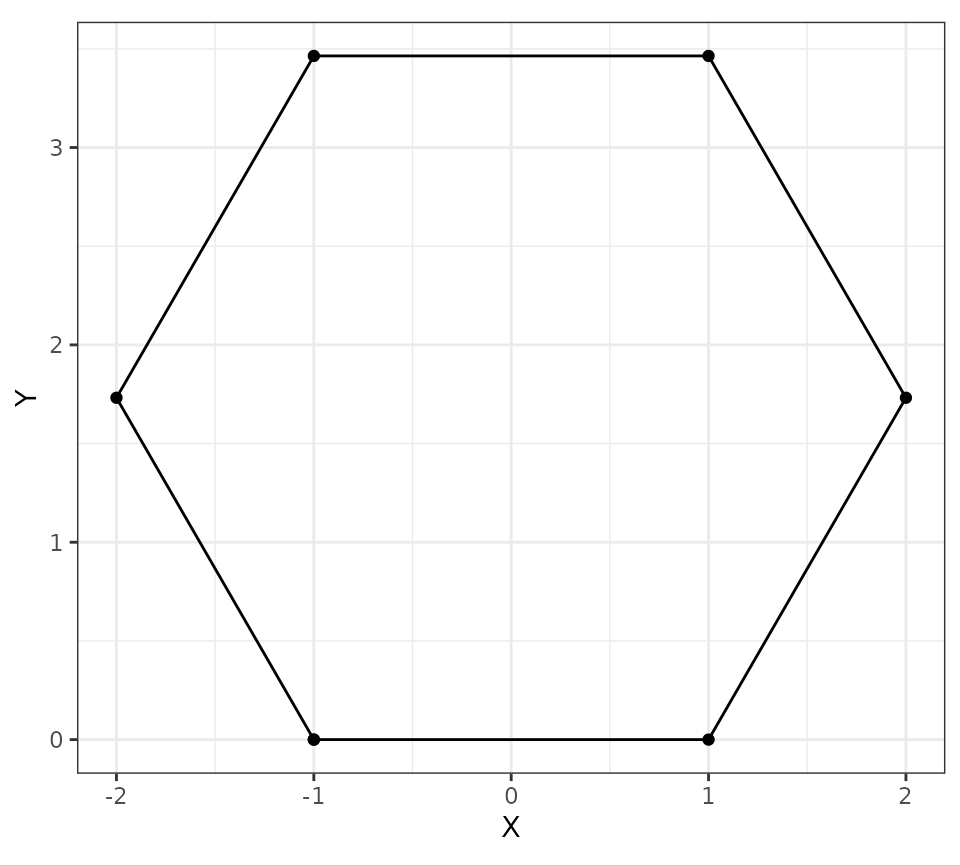
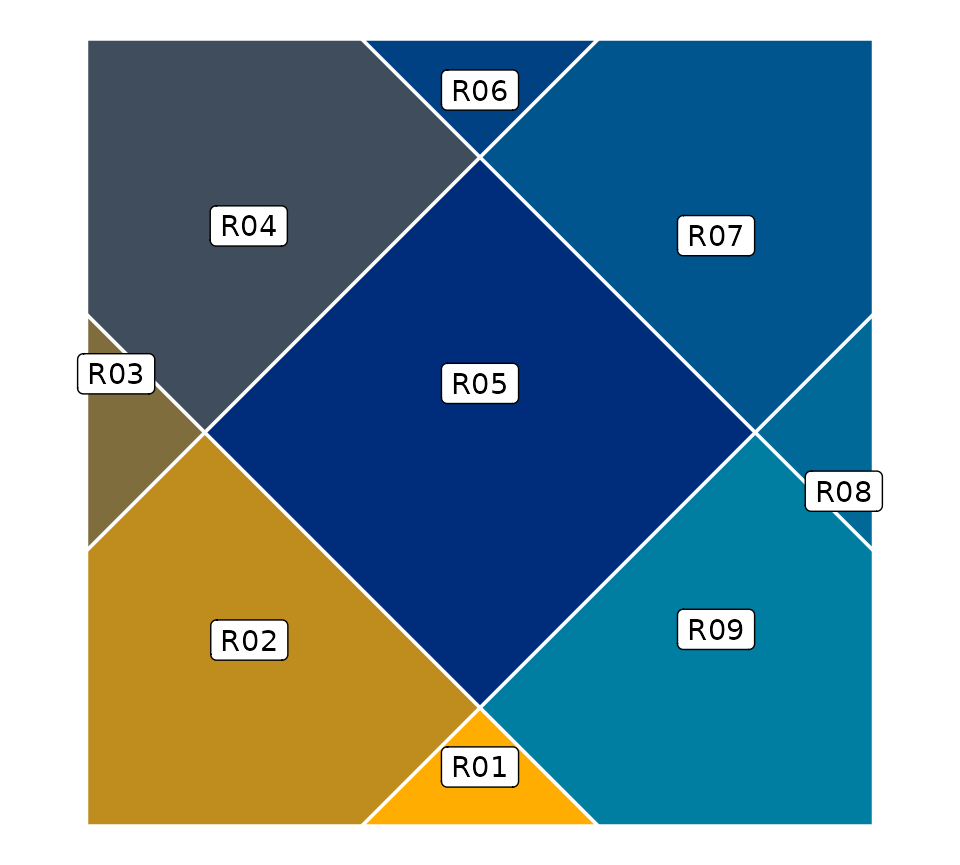
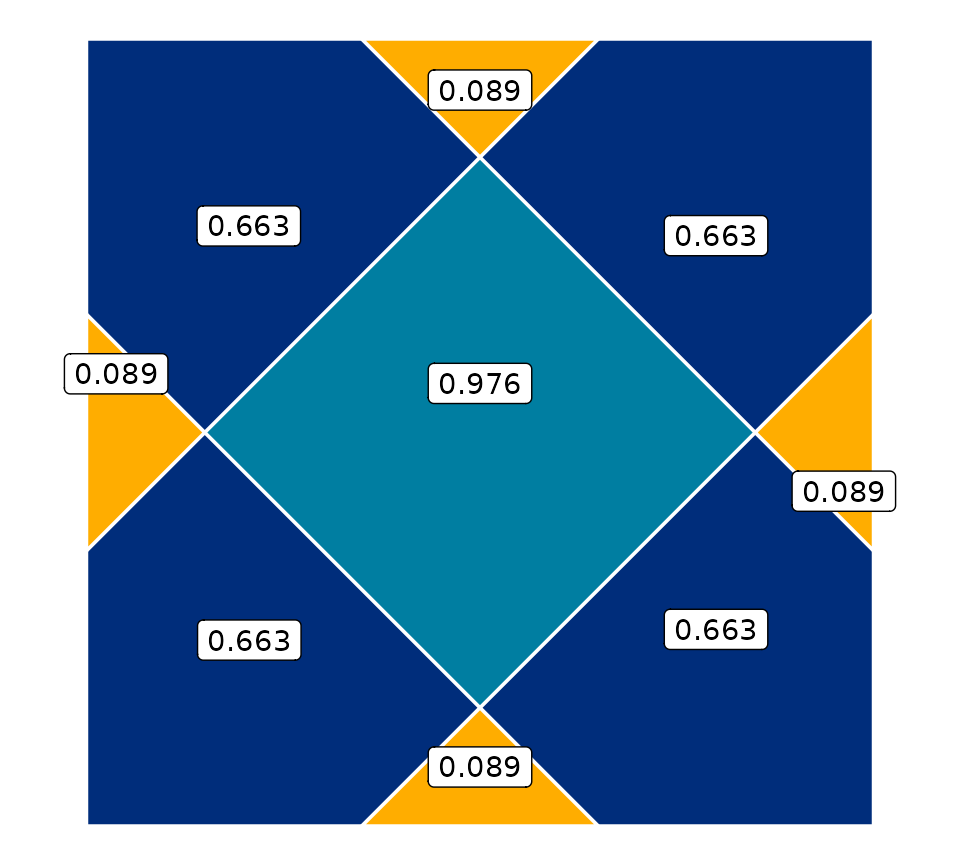

motif.Rmd
library(Kaashi)
library(ggplot2)
library(dplyr)
#>
#> Attaching package: 'dplyr'
#> The following objects are masked from 'package:stats':
#>
#> filter, lag
#> The following objects are masked from 'package:base':
#>
#> intersect, setdiff, setequal, union
library(sf)
#> Linking to GEOS 3.8.0, GDAL 3.0.4, PROJ 6.3.1The goal of motif function is to produce a polygon or polyline pattern for each tile shape. In Hankin’s method, two rays grow from a pair of points equidistant from the edge’s midpoint. To generate Islamic patterns, we employ the Hankin method. Shapes are made from the intersection of these rays.
As mentioned before to generation motifs we need:
The function regularPolygon is useful to create regular polygon vertices. This function produces a regular polygon with sides of length one such that its first side is on the x-axis (fro (-1,0) to (1,0)). In this case the origin is polygon side’s midpoint. In the default setting regularPolygon is matrix of that each row is vertex
hexagonal = regularPolygon(6)
hexagonal %>% as.data.frame() %>%
ggplot(aes(x = V1, y = V2))+
geom_polygon(fill = "transparent",color = "black")+
geom_point()+
theme_bw() + labs(x = "X", y = "Y")+
coord_fixed()
If set sf = TRUE in regularPolygon, the output is sf class object and has area and name columns. This option is good for cases where you want to combine simple polygons to make a motif.
hexpoly = regularPolygon(6,sf = T)
tilePlotter(hexpoly)
To create motifs, we need set \(\theta\) and \(\delta\).
tile <- motif(hexagonal,n = 6,theta = 45, delta = 0.5,polyLine = T, drawBox = T)
tilePlotter(tile)If set polyLine = T the output object is sf calss of polygons with name and area columns.
square = regularPolygon(4)
tile <- motif(square,n = 4,theta = 45, delta = 0.3, polyLine = F)
head(tile)
#> Simple feature collection with 6 features and 2 fields
#> Geometry type: POLYGON
#> Dimension: XY
#> Bounding box: xmin: -1 ymin: 0 xmax: 0.6985858 ymax: 2
#> CRS: NA
#> name area geometry
#> 1 R01 0.089 POLYGON ((0.2985858 1.44172...
#> 2 R02 0.663 POLYGON ((-0.3014142 7.7558...
#> 3 R03 0.089 POLYGON ((-1 0.7014142, -1 ...
#> 4 R04 0.663 POLYGON ((-1 1.301414, -1 2...
#> 5 R05 0.976 POLYGON ((1.294824e-16 1.69...
#> 6 R06 0.089 POLYGON ((-0.2985858 2, 0.2...
tilePlotter(tile)
As it can be seen tile tile object includes 9 regions and 3 different area.
pal <- colorRampPalette(c("#FFAD00","#002D7B","#007EA1"))
tileColors = pal(length(unique(tile$name)))
tilePlotter(tile, fill = "name",tileColor = tileColors)+
geom_sf_label(aes(label = name),color = "black")
tileColors = tileColors = pal(length(unique(tile$area)))
tilePlotter(tile, fill = "area",tileColor = tileColors)+
geom_sf_label(aes(label = area),color = "black")
To modify distance between polygons in motif use dist option.
tile <- motif(square,n = 4,theta = 45, delta = 0.3, polyLine = F,dist = 0.1)
tilePlotter(tile)
It is possible to combine motifs through transfer and rotation. In this way, we can use semi-regular or Archimedean tilings. The following is an example of this type.
oc = regularPolygon(8)
sq = regularPolygon(4)
octagonal = motif(box = oc, theta = 45, delta = 0.5, n = 8, polyLine = F)
square = motif(box = sq, theta = 45, delta = 0.5, n = 4, polyLine = F)
s1 = square %>% mutate(geometry = geometry + (oc[3,]-sq[1,]))
s2 = square %>% mutate(geometry = geometry + (oc[6,]-sq[1,]))
tile = rbind(octagonal,s1,s2)
tilePlotter(tile)